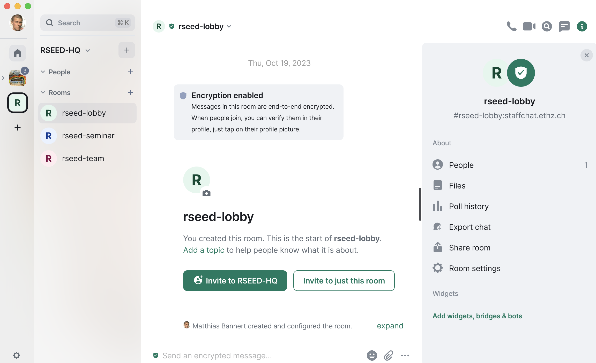

Community
The English-language word “community” derives from the Old French comuneté (Modern French: communauté), which comes from the Latin communitas “community”, “public spirit” (from Latin communis, “common”). – en.wikipedia.org
Newsletter Registration
Stay informed about new courses and trainings. Join the quarterly RSEED newsletter.
RSEED Seminar Series
in 2024, we are planning to hold a monthly seminar with speakers from academia, the public and private sector. Speakers will publish a blog post on their topic in advance of the live sessions to foster educated discussions within the sessions. The seminar series will run its own matrix channel to extend exchange beyond the live sessions.
Join the RSEED Matrix Chat Space
We have opened up a Matrix based chat space for people working with (economic) data who are interested in exchange on programming as an approach to analyse and manage data. Matrix is an open network for secure and decentralized communication. All you need is
- free registration at a matrix home server.
- a matrix client for your computer and/or mobile device. We recommend to use Element, the most popular matrix client.

Matrix Tutorial
The openwashdata community which also uses Matrix as a chat platform offers a comprehensive Matrix tutorial. The tutorial will guide you through finding the right homeserver for you and help set up an Element Matrix client so you can find and join our chat space and its channels. Make sure to use the below entrypoint instead of the openshdata community’s entrypoint.
RSEED Join Information
Find our entrypoint room at #rseed:staffchat.ethz.ch ! From the there you will find your first contacts as well as other more specific channels to join within our chat spaces.